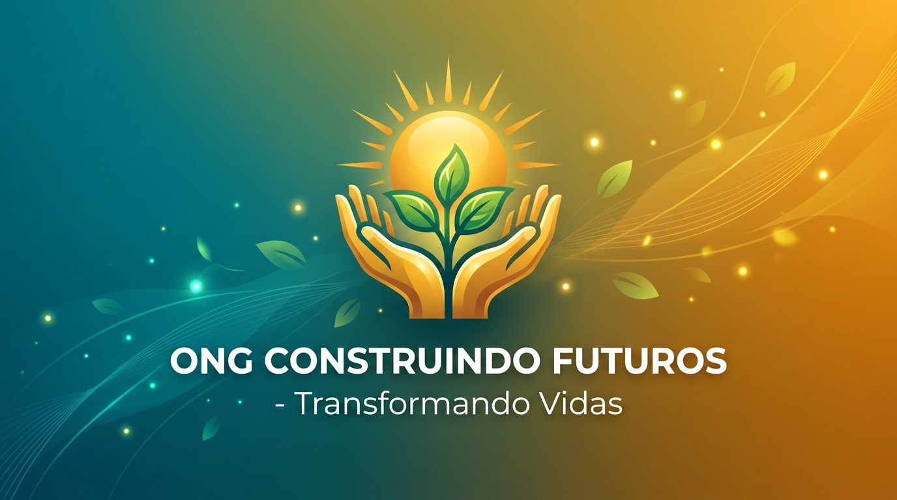
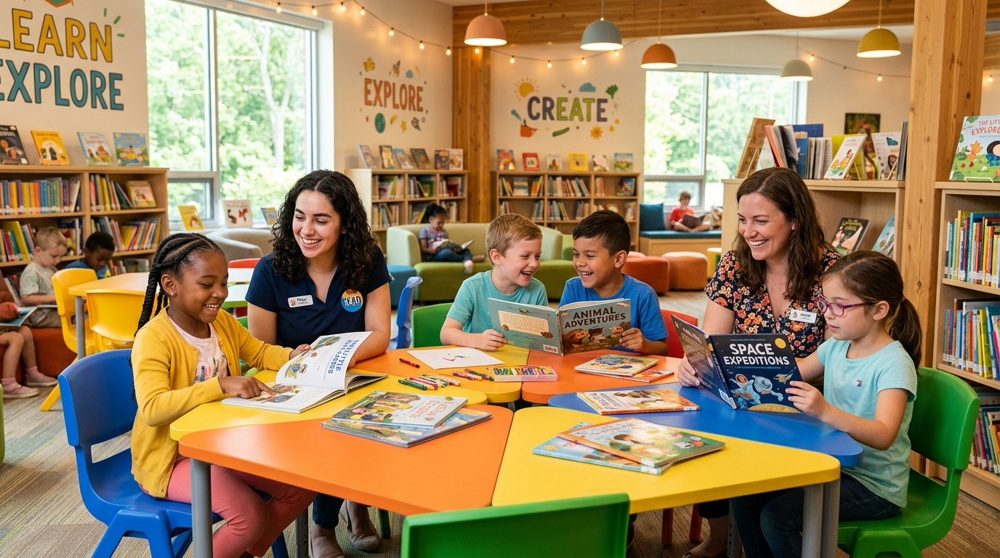
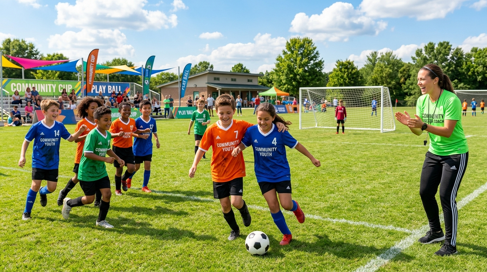
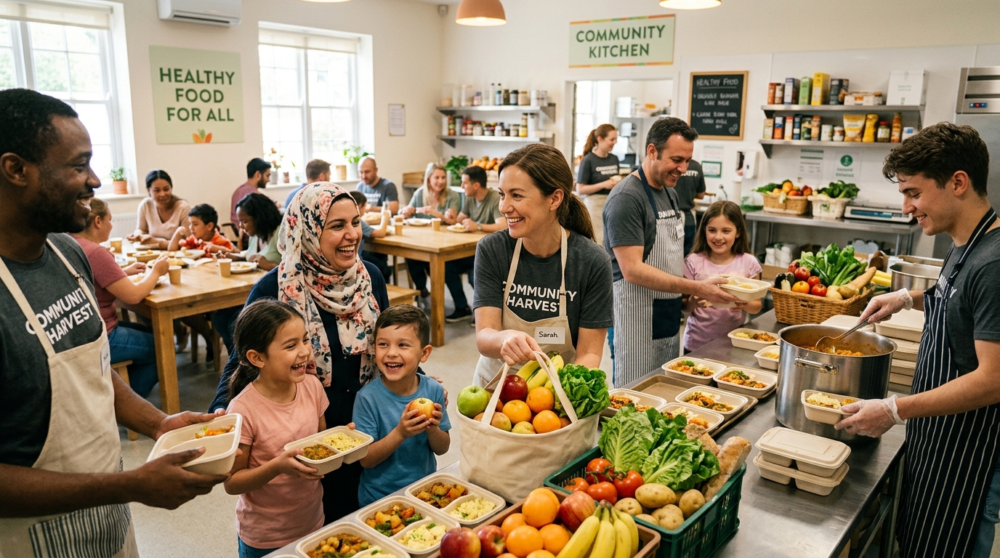

Nossa Missão
Promover o apoio social, educacional e cultural para crianças e jovens, criando pontes para a transformação de suas realidades.
Atuamos na linha de frente para oferecer acolhimento, ensino de qualidade e oportunidades para crianças e jovens em situação de vulnerabilidade social.

Crianças Atendidas
Voluntários Ativos
Refeições Servidas
De História e Impacto
Nossa instituição nasceu do desejo de garantir direitos fundamentais e promover o desenvolvimento integral comunitário.
Promover o apoio social, educacional e cultural para crianças e jovens, criando pontes para a transformação de suas realidades.
Ser um centro de referência em inclusão social e apoio comunitário, erradicando o abandono educacional em nossa região.
Transparência, empatia, respeito à diversidade, compromisso ético e amor em cada ação realizada.
Conheça algumas das frentes em que atuamos diariamente para transformar realidades na comunidade.

Oficinas de reforço escolar, apoio à alfabetização e acervo de livros infantis para incentivar o hábito da leitura.
Ver Detalhes
Aulas de futebol e atividades recreativas que incentivam a cooperação, saúde física e trabalho em equipe.
Ver Detalhes
Distribuição contínua de refeições balanceadas e apoio nutricional para famílias em situação de vulnerabilidade.
Ver DetalhesQuer tirar dúvidas, ser parceiro ou conhecer nossa sede de perto? Fale com nossa equipe!